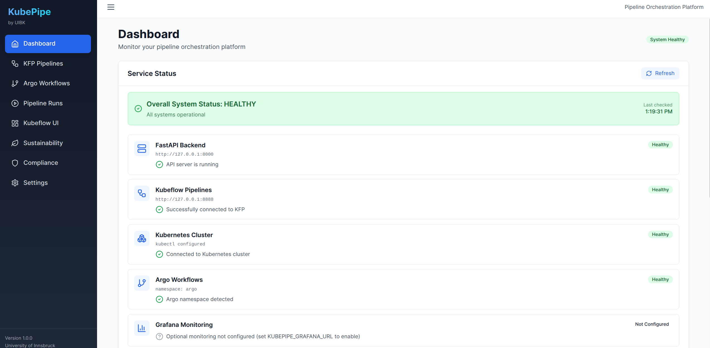

KubePipe

KubePipe is a unified pipeline orchestration platform designed to bridge Kubeflow Pipelines and Argo Workflows with built-in GDPR compliance and sustainability awareness. It enables users to deploy, monitor, and manage ML pipelines across both orchestrators from a single interface, while automatically assessing privacy risks, injecting compliance controls, and tracking carbon footprint and energy consumption per pipeline run.
The picture below shows the component in the DATAPACT architecture. 
KubePipe is a purpose-built solution that streamlines ML pipeline orchestration with integrated compliance and sustainability features. At its core, it leverages Kubeflow Pipelines (KFP v2) and Argo Workflows (v3) as execution backends, abstracting both behind a unified REST API (48 endpoints) and React-based Web UI. The compliance engine analyzes pipeline YAML for 8 GDPR checks (PII anonymization, consent verification, data minimization, pseudonymization, security contexts, audit logging, data retention, access controls) and can auto-inject missing controls. The sustainability engine measures per-run energy consumption using a SOTA model based on Strubell et al. (2019) with actual Kubernetes metrics-server data and region-specific carbon intensity factors, enabling carbon-aware scheduling decisions.
| Organisation(s) | License Nature | License |
|---|---|---|
| University of Innsbruck | Open Source | TBD |
| What (Types) | How (Process) | Values |
|---|---|---|
| Unified ML pipeline orchestration (KFP + Argo) with GDPR compliance auto-injection, consent management, and carbon-aware sustainability tracking | Analyzes pipeline YAML for 8 GDPR checks, auto-injects missing controls; measures per-run energy using SOTA model (Strubell et al. 2019) with real K8s metrics + regional carbon intensity; gates execution on consent status | Compliance: 0–100 score (≥90 Excellent, <40 Critical). Energy: per-run kWh + kg CO₂. Standards: ISO 23894, Green Software Foundation. API: 48 endpoints. |
| Project Links |
|---|
| Software GitHub Repository --> KubePipe https://github.com/DATAPACT/Kubepipe |
git clone https://github.com/DATAPACT/Kubepipe.git
cd Kubepipe
python3 setup.py
# — or —
bash scripts/start_all.sh| Service | URL |
|---|---|
| Backend API | http://127.0.0.1:8001 |
| Web UI | http://localhost:3000 |
| Argo Server | https://localhost:2746 |
| MinIO Console | http://localhost:9001 |
For accurate energy and carbon measurements, install the Kubernetes metrics-server:
kubectl apply -f https://github.com/kubernetes-sigs/metrics-server/releases/latest/download/components.yamlkubepipe argo-deploy examples/argo/hello-world.yaml # Deploy
kubepipe argo-status <workflow-name> # Status
kubepipe argo-list # List all
kubepipe argo-delete <workflow-name> # Deletekubectl -n kubeflow port-forward svc/ml-pipeline 8888:8888
curl -X POST http://127.0.0.1:8001/api/v1/execute \
-H 'Content-Type: application/json' \
-d '{"pipeline_id":"demo","environment":"dev","parameters":{}}'uv run python demo_converter.py# kubepipe.yaml
execution:
mode: "mock" # mock | kfp
kfp_host: "http://127.0.0.1:8888"University of Innsbruck
Funded by Horizon Europe (grant 101189771, DataPACT)
| Endpoint | Method | Description |
|---|---|---|
/api/v1/execute |
POST | Execute KFP pipeline |
/api/v1/runs/{id} |
GET | Get run status |
/api/v1/argo/deploy |
POST | Deploy Argo workflow |
/api/v1/argo/workflows |
GET | List workflows |
/api/v1/workflows/validate |
POST | Validate workflow YAML |
/api/v1/workflows/dry-run |
POST | Dry-run with resource estimates |
/api/v1/workflows/compliance-check |
POST | GDPR compliance analysis |
/api/v1/adaptation/carbon-forecast |
GET | Carbon intensity forecast |
/api/v1/adaptation/analyze |
POST | Analyze adaptation opportunities |
/api/v1/adaptation/apply |
POST | Apply runtime adaptations |
/api/v1/metrics/status |
GET | Check metrics-server status |
/api/v1/metrics/cluster |
GET | Real-time cluster metrics |
Interactive API docs available at: http://127.0.0.1:8001/docs
n/a